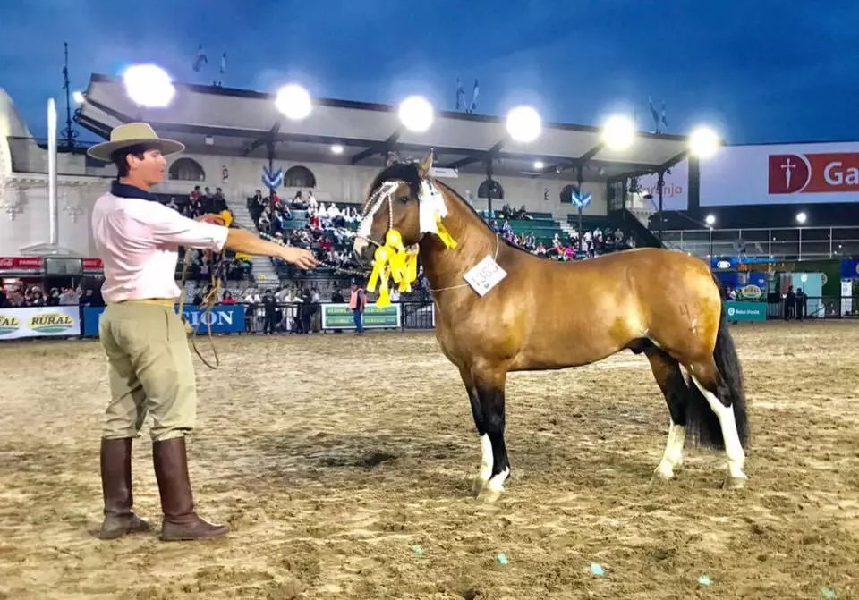
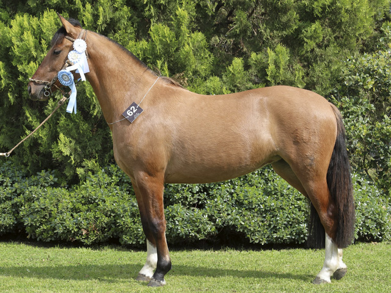

Nuestros Ultimos Premios
Campeon Argentino Palermo 2023

Ignacio El Bonete, fue 1° Premio, Campeón Potrillo Mayor y RESERVADO GRAN CAMPEÓN MACHO DE LA EXPOSICIÓN. NOMBRE: DEL OESTE BUEN VINO NÚMERO DE BOX: 1540 POR: DEL OESTE ZORRINO (DEL OESTE CHIFLIDO X DEL OESTE ZARANDA) Y DEL OESTE BUENA ONDA (DEL OESTE MUTANTE X DEL OESTE PURA VIDA) EXPOSITOR: Ignacio Gonzalez RP: 2993 SBA: 105480 NAC.: 06-12-2020
Yegua Campeona Ayacucho 2022 
La RP. 111, Ignacia La Jueza, fue 1° Premio, Reservada Campeona Yegua 3 años y RESERVADO GRAN CAMPEÓN HEMBRA DE LA EXPOSICIÓN. NOMBRE: IGNACIA LA JUEZA NÚMERO DE BOX: 1634 POR: JA VERSO E PROSA (TAÑIDO REDOBLADO X JA PEPITA) Y AGENCIADA MALITA (NAPALEOFU QUE MAS QUIERO X AGENCIADA GATA) EXPOSITOR: VIEJO CAMPERO S.R.L. RP: 111 SBA: 102538 NAC.: 01-02-2021